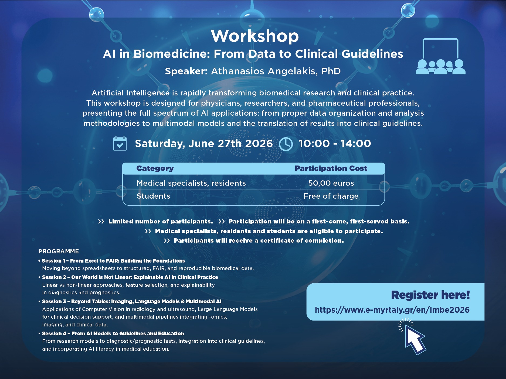

Who this is for
- Physicians, residents, clinical researchers, and medical students
- Pharma and medtech teams supporting medical education
- Hospitals, congresses, institutes, and biomedical research groups
Responsible AI Education · Clinical AI Literacy · Agentic AI in Medicine
Practical AI education for physicians, clinical researchers, and pharma partners: responsible AI, XAI, LLMs, agentic AI, low-data models, and clinical validation.
Positioning
Clear, physician-centered AI education: what works, what fails, what evidence to trust, and how AI can support - not replace - clinical judgment.
Machine learning translated into clinical language: validation, bias, leakage, explainability, LLM risks, workflow use, and responsible adoption.
AI in Biomedicine: From Data to Clinical Guidelines
A four-hour workshop on biomedical AI: FAIR data, XAI, multimodal models, LLMs, and translation from models to clinical guidelines.
First scheduled version: Saturday, 27 June 2026, 10:00-14:00, as part of the IMBE conference “Molecular Medicine from the Laboratory to Practice: Challenges and Questions X” in Athens.

Validation, bias, leakage, calibration, uncertainty, and human-in-the-loop use.
From spreadsheets to reproducible biomedical datasets.
Nonlinearity, interpretation, feature selection, biomarker discovery, and potential drug-target identification.
Prompting, RAG, hallucinations, governance, and realistic clinical workflows.
Clinical data, imaging, omics, biomarkers, text, and real-world evidence.
FDA AI/ML SaMD concepts, GMLP, transparency, lifecycle risk, and what physicians should ask.
ZACH-ViT, hZACH-ViT, and s-DNNs as compact, train-from-scratch alternatives.
ECG authentication, robustness, privacy, adversarial risk, and validation in high-stakes AI.
High-level responsible AI orientation for congresses, hospital groups, and pharma-supported medical education.
Structured educational workshop with practical examples, discussion, and discipline-specific case studies.
Deeper clinical AI literacy programme including hands-on interpretation of AI papers, model outputs, and common pitfalls.
Tailored seminar series for collaborating physicians, advisory boards, or medical affairs education initiatives.
Use this form for physician education, pharma-supported medical education, congress workshops, invited talks, or tailored responsible AI programmes.
Use this form for physician education, pharma-supported medical education, congress workshops, invited talks, or tailored responsible AI programmes.
Available in English and Greek - online, onsite, or hybrid.
Replace the placeholder Formspree endpoint in the HTML with your own endpoint when you create it.
Contact
For pharmaceutical, hospital, congress, or research-group seminars, contact me to adapt the format, duration, clinical domain, and learning objectives.